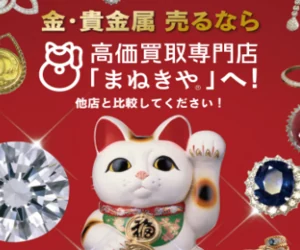
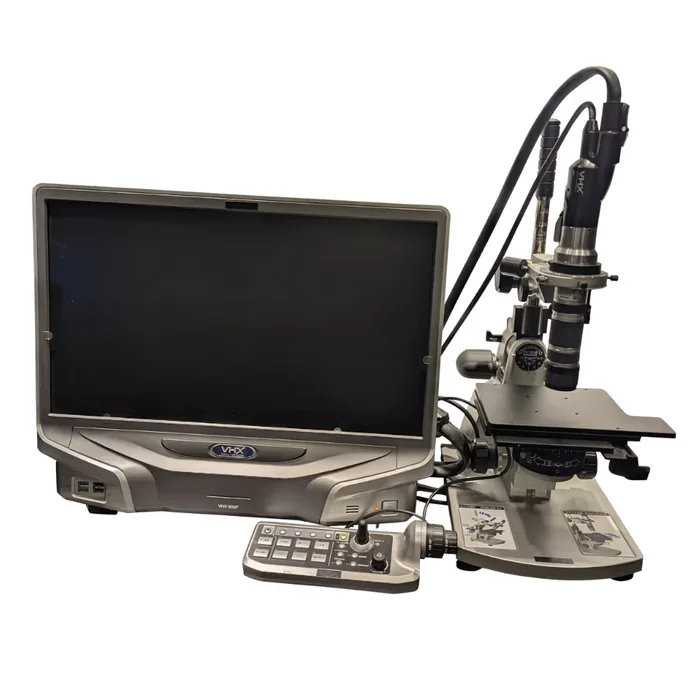

実家の片付けでは、古いからといって全部が価値のない物とは限りません。
特に、指輪・ネックレス・時計・金貨・宝石などは、処分する前に一度分けておくのがおすすめです。
実家整理で、先に「保留」にしたい物
片付け中に次の物が出てきたら、すぐゴミ袋へ入れず一度分けてください。
貴金属・アクセサリー
- 指輪
- ネックレス
- ブレスレット
- ピアス・イヤリング
- 金色・銀色の古いアクセサリー
時計・宝石
- 腕時計
- 懐中時計
- 宝石付きの指輪
- 鑑別書のある石
金貨・記念品
- 金貨
- 記念コイン
- 記念メダル
- 昔の硬貨類
一緒に残す物
- 箱
- 保証書
- 鑑定書・鑑別書
- 購入時の書類
一番大事なポイント：「古い」「壊れている」だけで捨てない
こんな状態でも、素材によっては価値が残る場合があります。
- ネックレスが切れている
- 指輪が曲がっている
- 石が取れている
- ピアスが片方だけ
- デザインが古い
- 黒ずんでいる
- 箱がない
アクセサリーとして使えなくても、金やプラチナなど素材そのものに価値がある場合があります。
見た目だけでは「価値があるか」が分からない物もあります
たとえば、こんな品です。
- 金色だけれど素材が分からない
- 刻印が薄い
- K18・750などの文字がある
- 昔から家にあって由来が分からない
- 金貨なのかメダルなのか分からない
- 宝石の種類が分からない
ここまでは自宅で分けられますが、
実際の素材や今の価値までは、見た目だけでは判断できません。
ここから詳しく知りたい方へ
「捨てる」「残す」だけで分けない
実家整理は4つに分けると進めやすくなります。
残す
本人や家族が今後も使う物。
家族へ渡す
家族が欲しい物、思い出として残したい物。
処分
明らかに不要で、価値もないと判断できる物。
価値確認
古い・素材不明・金額不明など、すぐ判断できない物。
迷ったら「処分」ではなく「価値確認」へ入れておく方が安全です。
どこから探す？貴重品が残りやすい場所
実家では、次のような場所に昔のアクセサリーや貴重品が残っていることがあります。
- タンスの引き出し
- 鏡台
- ジュエリーケース
- クローゼット
- バッグの中
- 小さな箱
- 仏壇周辺
- 金庫
- 書類ケース
勝手に探して売却しない
家中を探して売るのではなく、所有者や家族の意向を確認しながら進めることが大切です。
親が健在の場合
本人の物なので、次のような希望を先に確認します。
- 残したい
- 子どもへ渡したい
- 売ってもいい
- 思い出として取っておきたい
長年使っていないからといって、家族の判断だけで処分しないようにしましょう。
親が亡くなった後の場合
指輪・金貨・宝石など金銭的価値のある物は、相続財産に含まれる可能性があります。
一人の判断だけで売却・処分しない
所有関係が整理されていない段階では、独断で売ったり処分したりしないでください。必要に応じて相続人同士、または専門家へ確認します。
刻印があればここを見る
指輪の内側や留め具に、次のような刻印が入っていることがあります。
- K18
- K24
- 750
- 585
- Pt900
- Pt950
刻印だけで判断しない
刻印がある＝必ず本物、でも、刻印がない＝価値がない、でもありません。分からない場合は現物の確認が必要です。
価値確認が向いている物
次のような物なら、一度査定で確認する価値があります。
- 誰も使わない指輪
- 古いネックレス
- 壊れた貴金属
- 刻印の読めないアクセサリー
- 金貨・記念金貨
- 宝石付きの指輪
- 素材が分からない金色の品
逆に、思い入れが強い物や家族が使う予定の物まで、無理に査定・売却する必要はありません。
実家整理で見つけた品なら、この4点を確認
金か分からない品も確認できる
壊れたアクセサリーにも対応
査定だけでも利用できる
出張・店頭など状況に合った方法を選べる
実家整理では点数が多くなる場合もあるため、持ち運ぶのが大変なら出張査定に対応しているかも確認しておきたいところです。
この条件で、金・貴金属の査定に対応している3社を比較しました。
▼ 3社を比較する
＋
買取額20%UP
キャンペーン中
出張・宅配
出張・宅配
X線分析装置ダイヤモンド
分析機器
マイクロスコープ
アドバイザー鑑定
による鑑定
いーふらん
STAYGOLD
高価買取
電話やLINEでの
査定OK
高価買取
業界トップクラス
の店舗数
最寄り駅から
徒歩5分以内
↓ 1位のまねきやで、対象品と査定方法を確認 ↓
1位 まねきや

実家整理の品で重視したこと
実家整理で出てきた品は、
- 古い
- 刻印が読めない
- 壊れている
- 素材が分からない
というケースも少なくありません。そのため、素材不明品を確認できること・査定だけでも利用できること・持ち運びにくい場合の査定方法が選べることを重視して比較しています。
査定方法は3つから選べる
- 店頭買取：近くの店舗へ持ち込む
- 出張買取：自宅で見てもらう（出張料無料）
- 宅配買取：品物を送って査定してもらう
査定料・キャンセル料は無料
査定額を聞いたうえで、売らずに持ち帰ることもできます。「今の価値だけ知りたい」でも相談OKです。
向いている人
- 金か分からない品を見てもらいたい人
- 古い・壊れた品がある人
- 金額を見てから決めたい人
確認したいこと
- 20%UPは電話申込限定
- 上限・対象品の条件あり
- 店舗は全国30店舗以上
| 運営会社 | 株式会社 水野 |
|---|---|
| 営業時間 | 9:00〜21:00（年中無休） ※LINE査定は24時間受付 |
| 店舗数 | 全国30店舗以上 |
| 買取方法 | 店舗・出張・宅配 |
| 買取品目 | 金・貴金属／時計／宝石／ブランド品 など |


※ 店舗により内装は異なります。
「これって金？」でもOK！素材が分からない品にも対応
まねきやなら査定できる理由

- 高性能な専門機器を使って正確に査定
- 豊富な商品知識による確かな目利き
- レア金属を抽出するオリジナルの手法
刻印がない・読めない品も、専門機器で素材から確認してもらえます。金か分からなくても、まずは一度見てもらいましょう。
まねきやを使った人の口コミをチェック！

このようなお店は少し怖いイメージがありましたが、実際に行ってみるとおしゃれで居心地も良く、店員さんに一つ一つ説明していただけました。古いお金や、最近の金の高騰で金貨が高く付いたのには驚きでした。
以前お世話になった買取店が休みだったので見て頂いたところ、X線の機械で細かく計測して頂き、前回売却した時よりも随分高く買い取って頂きました。刻印のない金やプラチナ製品でも含有量を測定できるとのことで、もっと早く伺えば良かったと後悔しました。
今回も50gのインゴットを数枚買取って頂き、金相場が上がっているとの事で購入金額よりも高く売れました。
※ 公式サイト掲載の口コミを要約したものです。感想には個人差があり、同等の対応・金額を保証するものではありません。
よくある質問
古いアクセサリーでも価値はありますか。
古いデザインでも、金やプラチナなどが使われていれば素材として価値が残る場合があります。
壊れた指輪や切れたネックレスでも査定できますか。
素材によっては査定対象になる場合があります。壊れているだけで処分せず、一度確認する方法があります。
刻印がないアクセサリーは価値がありませんか。
刻印がないだけでは判断できません。摩耗やサイズ直しなどで刻印が読めなくなっているケースもあります。
実家の物を勝手に売っても大丈夫ですか。
所有者が健在なら本人の意向を確認してください。相続が関係する場合は、相続人間で確認する前に独断で売却しない方が安全です。
査定したら必ず売る必要がありますか。
ありません。価値を確認したうえで、残す・家族へ渡す・売るを判断できます。
「最大20%UP」なら、必ず20%上がりますか。
いいえ。「最大」であり適用条件があります。電話で自分の品物が対象か確認してください。
手数料はかかりますか。
まねきやは金製品の手数料を無料にするキャンペーンを実施中です。表面の単価ではなく、手数料込みの最終手取りで比べてください。
身分証は必要ですか。
必要です。古物営業法により本人確認が義務付けられています。
遺品でも売れますか。名義が違いますが。
相続した品物は相続した方の所有物として扱われます。ご本人以外の持ち物の売却には対応できません。
未成年でも売れますか。
18歳未満の方は、保護者の同伴または同意書が必要です。
3社とも査定に出して比べてもいいですか。
問題ありません。査定は無料と案内されているため、複数社に同じ品を見せて比べる方法もあります。
「捨ててはいけない物」を先に分ける
実家整理では、「いらない物を捨てる」ことよりも、「捨ててはいけない物を先に分ける」ことが大切です。
特に、古い指輪やネックレス、金貨、宝石など、見た目だけでは価値が分からない物は、一度確認してから判断すれば後悔を減らせます。
- 本ページはプロモーションを含みます
- 本ページは、公開されている情報をもとに編集部が作成した比較・紹介記事です
- 掲載の順位・総合評価・◎○などの評価は当編集部の主観的な比較であり、買取価格の優劣を保証するものではありません。「最大20%UP」等のキャンペーンは対象品・上限・併用等の条件があります
- 掲載内容は2026年9月3日時点の情報です。最新の条件は各社公式サイトでご確認ください
- 実際の査定額は、当日の金相場・重さ・純度・状態・商品によって変わります。掲載の買取実績・口コミは特定の事例であり、同等の金額や対応を保証するものではありません
- キャンペーンの適用条件・上限額は申込時にご確認ください